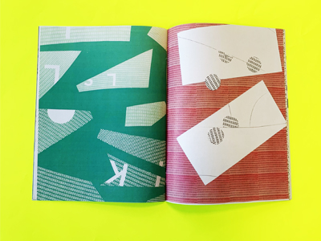
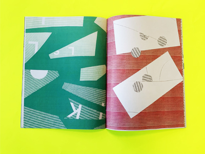

Group project which pays tribute to the Atelier Müesli studio. We concentrated on the graphic and
compositional values from their works. Then, we appropriated those values, using geometrical forms, orthogonal composition, and photomontage in a Fanzine.


 
